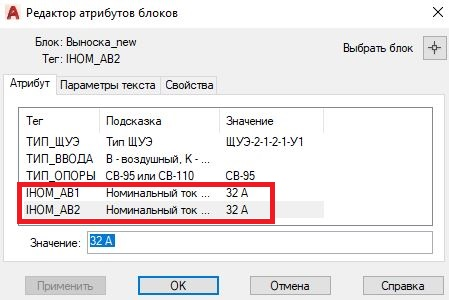
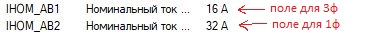
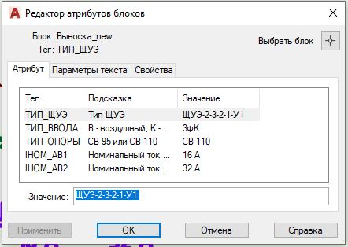
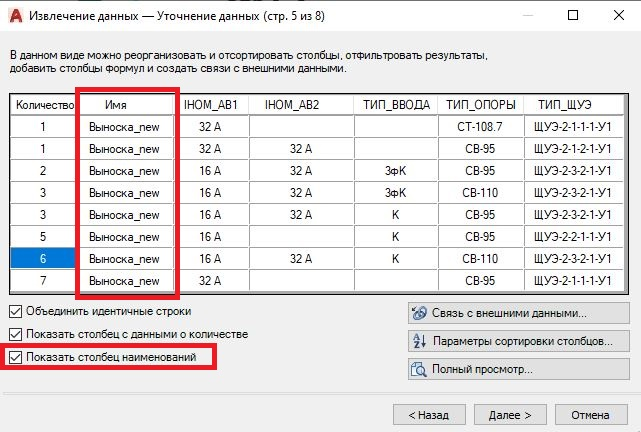
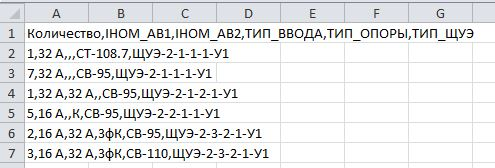
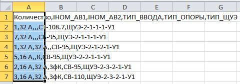

Руководство пользователя
Правила внесения данных в "блок-выноску" на плане расстановки ЩУЭ
Щитки на плане должны быть обозначены согласно следующим правилам:
- Все буквы должны быть написаны кирилицей, в т.ч. А, К, В...
- Не имеет значения регистр
- Название щитка должно быть вида: ЩУЭ-1-1-1-1-У1 (не забывать -У1).
-
-
Тип отходящих линий (кабельная или воздушная) помечать следующим образом:
- Если ЩУЭ имеет только воздушные отходящие, то ничего не указываеть или указать В.
- Если ЩУЭ на 1 СЭ: К для кабельной.
- Если ЩУЭ на 2 СЭ 1ф или 2 СЭ 3ф: КК для двух кабельных; КВ или ВК или К для кабельной+воздушной.
- Если ЩУЭ на 1 СЭ 3ф + 1 СЭ 1ф: КК для двух кабельных; 1фК для 1ф - каб, 3ф - возд; 3фК для 3ф - каб, 1ф - возд.
-
Если ЩУЭ на 2 СЭ, Iном АВ писать в специальных отдельных полях атрибутах:

-
Если ЩУЭ на 3ф + 1ф:, сначала указывать Iном АВ 3ф, затем Iном АВ 1ф.

- Если ЩУЭ на опору, и тип опоры не указан, то считается как СВ-95.
- При установке щитка на опоре, тип опоры писать так: СВ-110, СВ-95, СТ-108.7... (не сокращать до 110...).
- Примеры корректно заполненной выноски:

Правила по извлечению данных
- При извлечении данных нужно убрать столбец "имя" (снять галочку с поля "Показать столбец
наименований"):

- Извлеките данные в файл формата .csv
- Пример правильно заполненного извлечения:
Количество полей - 6. Соответственно, количество запятых в каждой строке - 5. Ошибка о длине массива говорит о не верном количестве полей. Изменние названия полей в блоке выноске приведет к ошибке (например "опора" вместо "ТИП_ОПОРЫ").
Правила по вводу данных на главной странице
- Скопируйте данные из файла .csv выделив первый столбец:
не забудьте выделить первую строку!
- Вставьте данные в программу